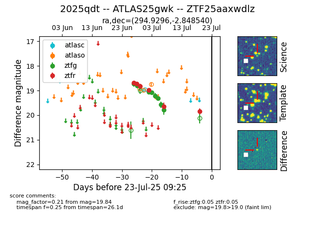

Target ZTF25aaxwdlz at 2025-07-23 11:48, see:
FINK: fink-portal.org/ZTF25aaxwdlz
Lasair: lasair-ztf.lsst.ac.uk/objects/ZTF25aaxwdlz
ALeRCE: alerce.online/object/ZTF25aaxwdlz
TNS: wis-tns.org/object/2025qdt
YSE: ziggy.ucolick.org/yse/transient_detail/2025qdt
alt names
ZTF25aaxwdlz (ztf,fink)
2025qdt (tns,yse)
ATLAS25gwk (atlas)
coordinates:
equatorial (ra, dec) = (294.9296,-2.84854)
galactic (l, b) = (35.9213,-12.03654)
photometry
last ztfg=19.79, ztfr=19.84
8 ztfg, 6 ztfr detections
